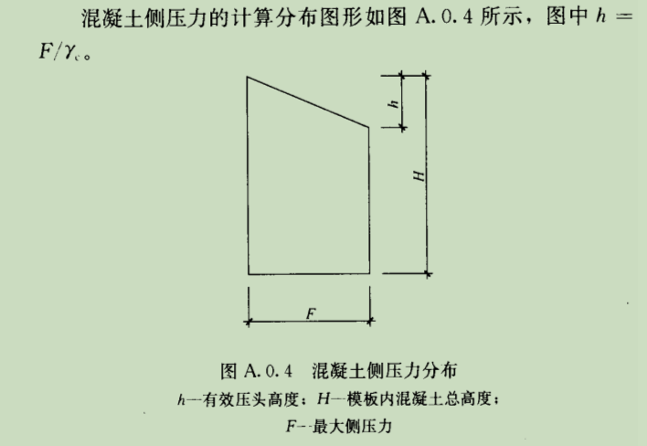

说明
计算依据
规范【1】：混凝土结构工程施工规范 GB 50666-2011
使用范围
新浇筑混凝土侧压力是墩柱、梁体等模板设计时主要考虑的荷载。
适用于采用插入式振捣器浇筑工况下混凝土侧压力计算。
其他说明
1、新浇筑混凝土侧压力计算公式在相关规范中表述有所不同。
2、本规范中对混凝土坍落度条件描述是连续的。
3、施工中需严格控制浇筑时坍落度值、浇筑速度。
计算相关公式及符号说明：
- F计算式1: \(F=γ_{c}H\)
- F计算式2: \(F=0.28γ_{c}t_{0}βV^{\frac{1}{2}}\)
- t0计算：\(t_{0}=\frac{200}{T+15}\)
- h计算：\(h=\frac{F}{γ_{c}}\)
不同坍落度(Tld)对应β取值：
- 50 < Tld ≤ 90mm 取 0.85；
- 90 < Tld ≤ 130mm 取 0.9；
- 130 < Tld ≤ 180mm 取 1.0。
新浇筑混凝土侧压力计算

按公式1计算 (Fk): kN/m2
取公式1和2中较小值 (Fk): kN/m2
有效压头高度 (h): m